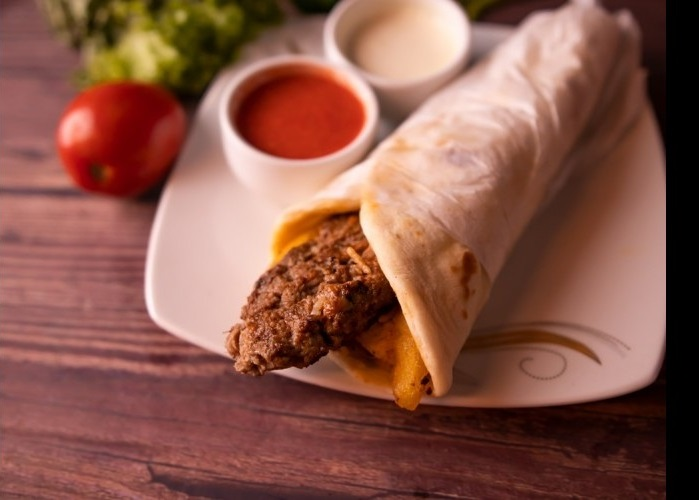

Turkish Kofta Sandwich
For people who want good suhoor food with an even better taste, try making easy sandwiches stuffed with delicious kofta meat, a recipe from Turkish cuisine that is worth trying now.
Ingredients:
- Minced meat: 1/2 kilo
- Breadcrumbs: 1 cup
- Eggs: 1 piece
- Olive oil: 1 tablespoon
- Garlic: 2 cloves (mashed)
- Parsley: 2 tablespoons (finely chopped)
- Cumin: 1/2 teaspoon
- Mixed spices: 1/2 teaspoon
- Dry mint: 1/2 tablespoon
- Black pepper: 1/2 teaspoon
- Radish: 1 piece (round cut)
- Bread: as needed
Preparation:
- Heat the oven to 180 degree Celsius.
- In a large bowl, mix the minced meat, eggs until the ingredients are homogeneous.
- Add the chopped parsley, mixed spices, garlic, and mix by hand.
- Add salt, pepper, dried mint leaves, and breadcrumbs, while continuing to knead.
- Shape the kofta fingers and place them on a large tray, keeping a distance between them.
- Insert the tray into the hot oven and bake for half an hour or until the kofta is cooked.
- Grease the bread with a little mayonnaise, add lettuce leaves, kofta fingers with radish rings, and serve hot.
Turkey Slider with Cheese
Prepared in the way of my lady's kitchen, light and good suhoor meals suitable for fasting people. Try the turkey slider with cheese and serve your recipe to your family hot.
Ingredients:
- Bread: 4 pieces (slider bread)
- Smoked turkey: 2 slices
- Gruyere cheese: 40 grams (grated)
- Butter: 20 grams
- Tomatoes: as desired
- Lettuce: as desired
Preparation:
- Grease the slider bread with a little butter.
- Place two slices of smoked turkey on two pieces of bread, and sprinkle with grated Gruyere cheese.
- Cover each piece with another piece of bread.
- Toast the sandwich on the grill for about 5 minutes or until the cheese melts.
- Serve hot with desired tomatoes and lettuce.
Italian Pizza
On the original way of ancient Italian cuisine, we offer you a way to make a delicious pizza with simple ingredients and easy and guaranteed work steps.
Ingredients:
For the Dough:
- Flour: 4 and a half cups
- Lukewarm water: a cup and a quarter
- Yeast: one and a half tablespoons
- Olive oil: 2 tablespoons
- Sugar: 2 tablespoons
For the Sauce:
- Vegetable oil: a quarter cup
- Sugar: a quarter teaspoon
- Onion: 1 piece (finely chopped)
- Garlic: 2 cloves (mashed)
- Salt: half a teaspoon
- Tomatoes: 2 cups and a third of a cup (mashed)
- Black pepper: to taste
Preparation:
- To prepare the dough: In a bowl, mix a quarter cup of water and yeast until it dissolves.
- In the bowl of an electric mixer, place the flour, sugar, yeast mixture, and salt.
- Mix well, and gradually add the oil until you get a soft and cohesive dough.
- Turn off the mixer, put the dough in a bowl, cover it with cling film, and leave it in a warm corner until the dough doubles in size.
- To prepare the sauce: Heat the oil in a saucepan over medium heat, then add the onions and garlic, and stir until the onions soften.
- Add the mashed tomatoes, and season with salt, black pepper, and sugar.
- Reduce the heat, and let the mixture boil for 5-7 minutes until the sauce thickens, then turn off the heat.
- Preheat the oven to 180 degrees Celsius, and grease an oven tray with a little vegetable oil.
- Spread the pizza dough in the oven tray, and add the sauce to the face.
- Spread the mozzarella cheese slices over the sauce layer, and put the tray in the oven for 20-25 minutes, until the pizza is cooked.
- Take the tray out of the oven, decorate the face with watercress leaves, and serve the pizza.